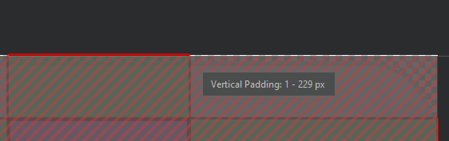

8 Android custom buttons example
Here I will show you different ways to create beautiful custom Android buttons. I made an example app showcase for the buttons which you can download HERE
Using PNGs.
The first (and fastest) way to create a custom button is the case shown for button2, button10 and button9. You simply need the PNG images of the button when pressed/unpressed. Then you create a selector for the button.
Tip: use PNG with transparent background to make your buttons fit any layer.
Here is the selector file for button2 (button7selector.xml):
<?xml version="1.0" encoding="utf-8"?>
<selector xmlns:android="http://schemas.android.com/apk/res/android">
<item
android:drawable="@drawable/bluesba"
android:state_enabled="false"/>
<item
android:drawable="@drawable/bluesbb"
android:state_pressed="true"
android:state_enabled="true"/>
<item android:drawable="@drawable/bluesba"
android:state_focused="true"
android:state_enabled="true"/>
<item android:drawable="@drawable/bluesba"
android:state_enabled="true"
android:state_pressed="false"
android:state_focused="false"/>
</selector>
As you can see you only have to indicate the drawable PNG file for every one of the button states and that's it.
And the layout XML code for button2 (in activity_main.xml) looks like this:
<Button
android:id="@+id/button2"
android:layout_width="181dp"
android:layout_height="49dp"
android:layout_marginTop="12dp"
android:background="@drawable/button7selector"
android:text="Button2"
app:layout_constraintEnd_toEndOf="parent"
app:layout_constraintStart_toStartOf="parent"
app:layout_constraintTop_toBottomOf="@+id/button10" />
Using shapes.
The second way I'd like to show you to create buttons in Android is with drawable XML files (shapes). That's the case of button3, button4, button5, and button6.
Button 3 layout XML (in activity_main.xml) is a mere pointer to the button selector:
<Button
android:id="@+id/button3"
style="@style/BlueButton"
android:layout_width="wrap_content"
android:layout_height="wrap_content"
android:layout_marginTop="32dp"
android:background="@drawable/button_selector"
android:text="Button3"
app:layout_constraintEnd_toEndOf="parent"
app:layout_constraintHorizontal_bias="0.498"
app:layout_constraintStart_toStartOf="parent"
app:layout_constraintTop_toTopOf="parent" />
And the selector itself (button_selector.xml), points to two drawable shapes XML files:
<?xml version="1.0" encoding="utf-8"?>
<selector xmlns:android="http://schemas.android.com/apk/res/android">
<item android:drawable="@drawable/button_gradiant_2" android:state_pressed="true" />
<item android:drawable="@drawable/button_gradiant_1" />
</selector>
button_gradiant_1.xml is:
<?xml version="1.0" encoding="utf-8"?>
<shape xmlns:android="http://schemas.android.com/apk/res/android"
android:shape="rectangle">
<corners android:radius="8dp" />
<gradient
android:angle="90"
android:endColor="@color/colorAccentLight"
android:centerColor="@color/colorAccent"
android:startColor="@color/colorAccent" />
</shape>
button_gradiant_2.xml is:
<?xml version="1.0" encoding="utf-8"?>
<shape xmlns:android="http://schemas.android.com/apk/res/android"
android:shape="rectangle">
<corners android:radius="8dp" />
<gradient
android:angle="270"
android:endColor="@color/colorAccentLight"
android:centerColor="@color/colorAccent"
android:startColor="@color/colorAccent" />
</shape>
I will omit button4, button5 and button6 selectors since they are very similar to the button3 selector, that is, a mere pointer to the shape XML files that will be drawn when they are pressed/unpressed, but I'll show their XML shape files to let you know how to draw eye-pleasant shapes:

button4 when pressed/unpressed is made with these shapes (buttonbg2.xml and buttonbg2s.xml):
<?xml version="1.0" encoding="UTF-8"?>
<shape xmlns:android="http://schemas.android.com/apk/res/android" android:id="@+id/listview_background_shape">
<stroke android:width="2dp" android:color="@color/greenborder2" />
<padding android:left="2dp"
android:top="2dp"
android:right="2dp"
android:bottom="2dp" />
<corners android:radius="5dp" />
<solid android:color="@color/greenbg2" />
</shape>
<?xml version="1.0" encoding="UTF-8"?>
<shape xmlns:android="http://schemas.android.com/apk/res/android" android:id="@+id/listview_background_shape">
<stroke android:width="2dp" android:color="@color/greenborder2" />
<padding android:left="2dp"
android:top="2dp"
android:right="2dp"
android:bottom="2dp" />
<corners android:radius="5dp" />
<solid android:color="@color/greenbg2p" />
</shape>
button5 looks the same pressed or unpressed (roundedbutton1.xml):
<?xml version="1.0" encoding="UTF-8"?>
<shape xmlns:android="http://schemas.android.com/apk/res/android" android:id="@+id/roundedsquareshape">
<!--
<stroke android:width="2dp" android:color="@color/greenborder2" />
-->
<padding android:left="2dp"
android:top="2dp"
android:right="2dp"
android:bottom="2dp" />
<corners android:radius="50dp" />
<solid android:color="@color/blue2" />
</shape>
And finally, button6 is made with 2 shapes in 2 different layers (button4bg.xml). That is also possible as shown here:
<?xml version="1.0" encoding="utf-8"?>
<layer-list xmlns:android="http://schemas.android.com/apk/res/android">
<!-- Bottom 15dp Shadow -->
<item>
<shape android:shape="rectangle">
<solid android:color="@color/grey1" />
<corners android:radius="5dp" />
</shape>
</item>
<!-- White Top color -->
<item android:bottom="5px" android:right="5px">
<shape>
<stroke android:width="2px" android:color="@color/grey1" />
<padding android:left="2dp"
android:top="2dp"
android:right="2dp"
android:bottom="2dp" />
<corners android:radius="5dp" />
<gradient
android:angle="90"
android:endColor="@color/grey3"
android:startColor="@color/grey2" />
</shape>
</item>
</layer-list>
Using 9-patch PNGs.
{kind=link}
Button7 is a special case of using a PNG file as a background. It uses a 9-patch file, which is a PNG file divided in 9 sections that allow it to be stretched without losing the shape.
{kind=link}
You can find plenty of information of 9-patch files in Internet but they are easy to create in Android Studio. Simply right click in a PNG file and select create 9-patch.
Here are the layout XML (in activity_main.xml) and the selector (button5selector.xml) XML files. As you can see, you can treat them as any other drawable.
<Button
android:id="@+id/button7"
android:layout_width="144dp"
android:layout_height="48dp"
android:layout_marginTop="20dp"
android:background="@drawable/button5selector"
android:text="Button7"
app:layout_constraintEnd_toEndOf="parent"
app:layout_constraintHorizontal_bias="0.498"
app:layout_constraintStart_toStartOf="parent"
app:layout_constraintTop_toBottomOf="@+id/button6" />
<?xml version="1.0" encoding="utf-8"?>
<selector xmlns:android="http://schemas.android.com/apk/res/android">
<item
android:drawable="@drawable/whiteba"
android:state_enabled="false"/>
<item
android:drawable="@drawable/whitebb"
android:state_pressed="true"
android:state_enabled="true"/>
<item android:drawable="@drawable/whiteba"
android:state_focused="true"
android:state_enabled="true"/>
<item android:drawable="@drawable/whiteba"
android:state_enabled="true"
android:state_pressed="false"
android:state_focused="false"/>
</selector>
Common problems.
Problem: I can't change the background of my buttons. It doesn't matter what I try.
Solution: Default Android theme overlaps any button background. That's why you need to change the Android default theme for another one. Here's the app theme I used in the example (themes.xml in the res folder):
<resources xmlns:tools="http://schemas.android.com/tools">
<!-- Base application theme. -->
<!-- substitute "Theme.MaterialComponents.DayNight.DarkActionBar" because it will override the custom background -->
<style name="Theme.ButtonsExample1" parent="Theme.AppCompat.Light.NoActionBar">
<!-- Primary brand color. -->
<item name="colorPrimary">@color/purple_500</item>
<item name="colorPrimaryVariant">@color/purple_700</item>
<item name="colorOnPrimary">@color/white</item>
<!-- Secondary brand color. -->
<item name="colorSecondary">@color/teal_200</item>
<item name="colorSecondaryVariant">@color/teal_700</item>
<item name="colorOnSecondary">@color/black</item>
<!-- Status bar color. -->
<item name="android:statusBarColor" tools:targetApi="l">?attr/colorPrimaryVariant</item>
<!-- Customize your theme here. -->
</style>
</resources>
Problem: I can't get to display text in my buttons when I use a 9-patch.
Solution: Note that when you are defining the 9-patches regions you can also set vertical/horizontal paddings. Check if you modified the paddings by mistake.
